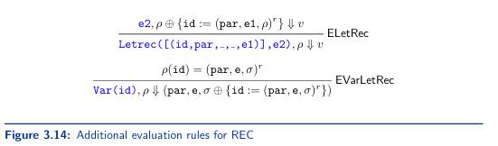

3.3 Rec
Our language unfortunately fortunately doesn't support recursion. However this is Stevens and everything must be implemented recursively, so let's change that.
The following attempt at defining the factorial of 5 fails because f is not visible in the body of the proc
let f =
proc (x) {
if zero?(x)
then 1
else x*(f (x-1)) }
in (f 5)
In the environment, the closure f does not include a reference to f itself. REC changes this by allowing us to define recursive functions. The factorial of 5 in rec would be as follows
letrec fact(x) =
if zero?(x)
then 1
else x * (fact (x-1))
in (fact 5)
REC also supports mutually recursive function declarations such as
let true = zero?(0)
in let false = zero?(1)
in letrec
even(x) = if zero?(x) then true else (odd (x-1))
odd(x) = if zero?(x) then false else (even (x-1))
in (odd 99)
Concrete Syntax
Rec introduces the concrete syntax in bold, the rest is from PROC and LET
⟨Expression⟩ ::= ⟨Number⟩
⟨Expression⟩ ::= ⟨Identifier⟩
⟨Expression⟩ ::= ⟨Expression⟩⟨BOp⟩⟨Expression⟩
⟨Expression⟩ ::= zero?(⟨Expression⟩)
⟨Expression⟩ ::= if⟨Expression⟩then⟨Expression⟩else⟨Expression⟩
⟨Expression⟩ ::= let⟨Identifier⟩=⟨Expression⟩in⟨Expression⟩
⟨Expression⟩ ::= (⟨Expression⟩)
⟨Expression⟩ ::= proc(⟨Identifier⟩){⟨Expression⟩}
⟨Expression⟩ ::= (⟨Expression⟩⟨Expression⟩)
⟨Expression⟩ ::= letrec{⟨Identifier⟩(⟨Identifier⟩)=⟨Expression⟩}+ in⟨Expression⟩
⟨BOp⟩ ::= +|-|*|/
Note the curly braces in the production for <Expression> are not terminals, they just indicate that a sequence of terminals and nonterminals (in this case ⟨Identifier⟩(⟨Identifier⟩)=⟨Expression⟩) will occur atleast once.
Abstract Syntax
The abstract syntax for REC is as follows, new additions are bolded.
type expr =
| Var of string
| Int of int
| Add of expr*expr
| Sub of expr*expr
| Mul of expr*expr
| Div of expr*expr
| Let of string*expr*expr
| IsZero of expr
| ITE of expr*expr*expr
| Proc of string*texpr option*expr
| App of expr*expr
| Letrec of rdecs*expr
and
rdecs = (stringstringtexpr optiontexpr optionexpr) list
Parsing the expression below
letrec fact(x) =
if zero?(x)
then 1
else x * (fact (x-1))
in (fact 5)
will result in this AST (None can be ignored for now)
AProg ([],
Letrec
([("fact", "x", None, None,
ITE (IsZero (Var "x"), Int 1,
Mul (Var "x", App (Var "fact", Sub (Var "x", Int 1)))))],
App (Var "fact", Int 5)))
REC introduces the following new rules below on top of everything in PROC and LET
Interpreter
Recursive functions will be represented as special closures called recursion closures
A recursion closure is a closure with the tag r to distinguish it from a normal closure. Written (id, e, p)ʳ where
e ∈ EXP, id ∈ ID and ρ ∈ ENV
The set of all recursion closures is RCL
ENV := ID⇀(EV∪RCL)
EV:= Z∪B∪CL
CL := {(id,e,ρ) | e ∈ EXP,id ∈ ID,ρ ∈ ENV}
RCL := {(id,e,ρ)ʳ | e ∈ EXP,id ∈ ID,ρ ∈ ENV}
Recursion closures are not expressed values, so you can't write a program that when evaluated returns a recursion closure, they just help define evaluating recursive programs.
Recursive function definitions will be stored as recursion closures, though they will produce normal closures, which are produced on the fly.
Specification
The set of results and evaluation judgements in RET is the same as PROC
These are R := EV U {error} and e,p⇓r where r ∈ R respectively.
Evaluation rules for REC is PROC and the ones above.
ELetRec created a recursion closure and adds it to the current environment p, and continues with the evaluation of e2.
The rule EVarLetRec looks up identifiers that refer to previously declared recursive functions, and once finding the corresponding one in the current environment, it creates a new closure and returns it. The new closure includes an environment that has a reference to f itself.
Implementation
Recursion closures are implemented by adding a new constructor ExtendEnvRec to type expr
type exp_val =
| NumVal of int
| BoolVal of bool
| ProcVal of string*expr*env
and
env =
| EmptyEnv
| ExtendEnv of string*exp_val*env
| ExtendEnvRec of string*string*expr*env
ExtendEnvRec's args are as follows, the name of the recursive function being defined id, the name of the formal parameter par, the body of the recursive function body, and the environment env.
In the environment ρ ⊕ {id :=(par,e1,ρ)ʳ} in the rule ELetRec, we are missing an argument. This is correct, the ⊕ operator in the evaluation rule is modeled by ExtendEnvRec, in our implementation, though we don't need to store p because it is just the tail of the environment.
We also need an operation similar to extend_env but adds a new recursive closure
let extend_env_rec : string-> string-> expr-> env ea_result =
fun id par body->
fun env-> Ok (ExtendEnvRec(id,par,body,env))
We also need to update the implementation of apply_env to have the ExtendEnvRec clause
let rec apply_env : string-> exp_val ea_result =
fun id->
fun env->
match env with
| EmptyEnv-> Error (id^" not found!")
| ExtendEnv(v,ev,tail)->
if id=v
then Ok ev
else apply_env id tail
| ExtendEnvRec(v,par,body,tail)->
if id=v
then Ok (ProcVal (par,body,env))
else apply_env id tail
Lastly, we add a new clause to the interpreter for Letrec(id, par, e1, e2)
| Letrec([(id,par,_,_,e1)],e2)->
extend_env_rec id par e1 >>+
eval_expr e2